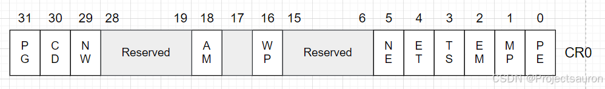

x86/x86_64 下的 CPU 控制寄存器
[TOC]
前言
x86/x86_64 CPU 中提供了控制寄存器，来决定 CPU 的操作模式和当前执行任务的属性。这些寄存器在 32 位模式下是 32 bit，在 64 位模式中，控制寄存器扩展为 64 bit。
CPU 架构中共有 CR0、CR1、CR2、CR3、CR4、CR8 共 6 个控制寄存器。
一、CR0 寄存器
CR0 寄存器是 x86 架构中的一种控制寄存器，用于控制和配置处理器的操作模式和特性。CR0 寄存器中的位字段包含了各种系统和处理器状态的控制位，具体功能如下：

- PE：保护使能（Protection Enable），该位用于控制处理器的保护模式。
- 当 PE = 1 时，处理器运行在保护模式下，可以使用内存保护等功能。
- 当 PE = 0时，处理器运行在实模式下。
- MP：监视协处理器（Monitor Coprocessor），该位用于控制对协处理器的监控。
- 当 MP = 1 时，处理器监视协处理器的使用情况，当发生对协处理器的操作时，会触发异常。
- 当 MP = 0 时，处理器不监视协处理器。
- EM：模拟（Emulation），该位用于控制协处理器的模拟。
- 当 EM = 1 时，处理器不支持协处理器指令，会将协处理器指令转为软件模拟执行。
- 当 EM = 0 时，处理器支持协处理器指令。
- TS：任务切换（Extension Type），该位用于指示处理器是否支持处理器扩展。
- 当 ET = 1 时，表示处理器支持处理器扩展。
- 当 ET = 0 时，表示不支持处理器扩展。
- ET：扩展类型（Extension Type），该位用于指示处理器是否支持处理器扩展。
- 当 ET = 1 时，表示处理器支持处理器扩展。
- 当 ET = 0 时，表示不支持处理器扩展。
- NE：数值错误（Numeric Error），该位用于控制浮点异常的处理方式。
- 当 NE = 1 时，处理器会将浮点异常的错误码保存到浮点异常状态寄存器中。
- 当 NE = 0 时，处理器在浮点异常发生时不保存错误码。
- WP：写保护（Write Protect），该位用于控制写保护。
- 当 WP = 1 时，处理器会禁止用户态程序向只读页面写数据。
- 当 WP = 0 时，处理器不会执行写保护。
- AM：对齐掩码（Alignment Mask），该位用于控制内存对齐检查。
- 当 AM = 1 时，处理器会执行内存对齐检查。
- 当 AM = 0 时，处理器不会执行对齐检查。
- NW：不直写（Not Write-through），该位用于控制写缓冲的写策略。
- 当 NW = 1 时，处理器执行不通过写缓冲进行写操作，而直接写入内存。
- 当 NW = 0 时，处理器使用写缓冲进行写操作。
- CD：缓存禁用（Cache Disable），该位用于控制处理器的缓存。
- 当 CD 为 1 时，处理器禁用数据缓存。
- 当 CD 为 0 时，处理器启用数据缓存。
- PG：分页（Paging），该位用于控制分页功能。
- 当 PG = 1 时，处理器启用分页机制。
- 当 PG = 0 时，处理器禁用分页机制。
注意，这些字段的设置和读取需要在特权级别为 0（内核态）的情况下进行。
二、CR1 寄存器
CR1是未定义的控制寄存器，供将来的处理器使用。
三、CR2 寄存器
CR2是页故障线性地址寄存器，保存最后一次出现页故障（Page Fault）的全 32（或 64） 位线性地址。
四、CR3 寄存器
CR3 是页目录基址寄存器，也叫做：PDBR（Page Table Base Register），用于保存页目录表的物理地址，页目录表总是放在以 4K 字节为单位的存储器边界上，因此，它的地址的低 12 位总为 0，不起作用，即使写上内容，也不会被理会。
每个任务(程序)都有自己的页目录和页表，页目录表的地址被记录在任务的 TSS 段中。
当操作系统调度任务的时候，处理器就会找到即将执行的新任务的 TSS 段信息，然后把新任务的页目录开始地址更新到 CR3 寄存器中。
每当用 MOV 指令重置 CR3 的值时，会导致分页机制高速缓冲区的内容无效，用此方法，可以在启用分页机制之前，即把 CR0 的 PG 位置 1之前，预先刷新分页机制的高速缓存。CR3 寄存器即使在 CR0 寄存器的 PG 位或 PE 位为 0 时也可装入，如在实模式下也可设置 CR3，以便进行分页机制的初始化。在任务切换时，CR3 要被改变，但是如果新任务中 CR3 的值与原任务中 CR3 的值相同，那么处理器不刷新分页高速缓存，以便当任务共享页表时有较快的执行速度。
- PWT：页级写穿标志位（Page-Level Write-Through），用于指定页表是否应用写穿策略。
- PCD：页级高速缓存禁用标志位（Page-Level Cache Disable），用于指定页表是否应用高速缓存禁用策略。
- Page Directory Base Address：这些位存储了页目录表（Page Directory Table）的物理地址的高20位，用于指定页目录表的起始物理地址。
- 如果是 64 位的话 CR3 寄存器的第 32 位到第 52 位是 Page Directory Base Address 的扩展位，用于指定页目录表的起始物理地址的剩余 12 位。
五、CR4 寄存器
CR4 包含了一些扩展控制位，用于控制和配置处理器的高级功能。
各个字段如下：
- VME：允许使用虚拟 8086 模式扩展。
- PVI：保护模式虚拟中断。
- TSD：禁用处理器在启动过程中使用时间戳计数器。
- DE：允许调试扩展。
- PSE：启用超级页（2MB页）
- PAE：启用物理地址扩展，支持大于4GB的物理内存。
- 当 PAE = 1 时，是 2-9-9-12 分页。
- 当 PAE = 0 时， 是 10-10-12 分页。
- MCE：启用机器检查异常。
- PGE：启用全局页表。
- PCE：启用性能监控计数器。
- OSFXSR：允许操作系统使用 FXSAVE 和 FXRSTOR 指令进行 XMM 寄存器的保存和恢复。
- OSXMMEXCPT：允许操作系统使用 SSE 指令集的浮点异常。
- UMIP：防止用户模式下执行特权指令。
- VMXE：启用虚拟机扩展。
- SMXE：启用安全模式扩展。
- FSGSBASE：启用 FS、GS 寄存器的基址存储。
- PCIDE：启用 PCID（Process Context Identifier）。
- OSXSAVE：启用 XSAVE 和 XRSTOR 指令。
- SMEP：启用用户模式执行保护。
- SMAP：启用内核空间和用户空间地址映射的严格分离。
六、CR8 寄存器
CR8-提供对任务优先级寄存器（Task Priority Register, TPR）的读写访问。它指定优先级值，操作系统用于控制允许中断处理器的外部中断的优先级类别。此寄存器仅在 64 位模式下可用。但是，中断过滤在兼容模式下继续应用。
任务优先级寄存器存储了当前任务的优先级级别。优先级级别是一个 0 到 15 的值，其中 0 表示最高优先级，15 表示最低优先级。处理器使用该寄存器中的值来确定任务的调度顺序和优先级。
更多信息可以查阅 Intel 手册。